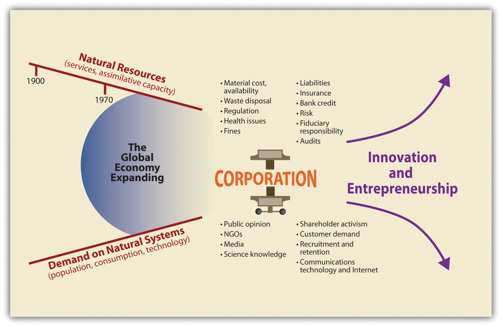
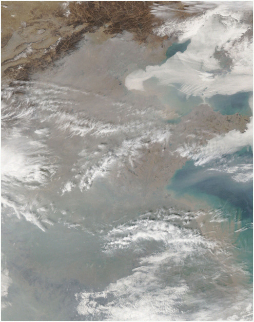
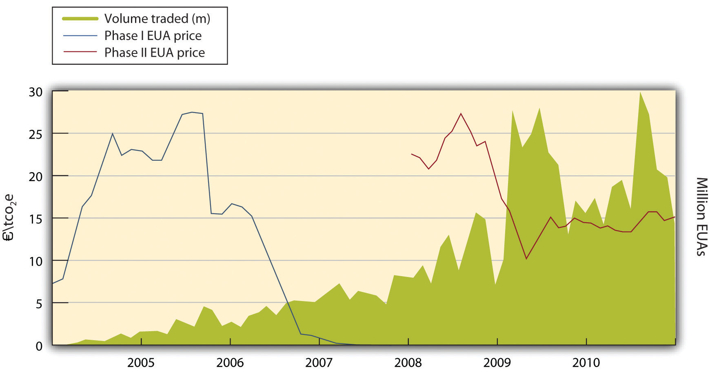
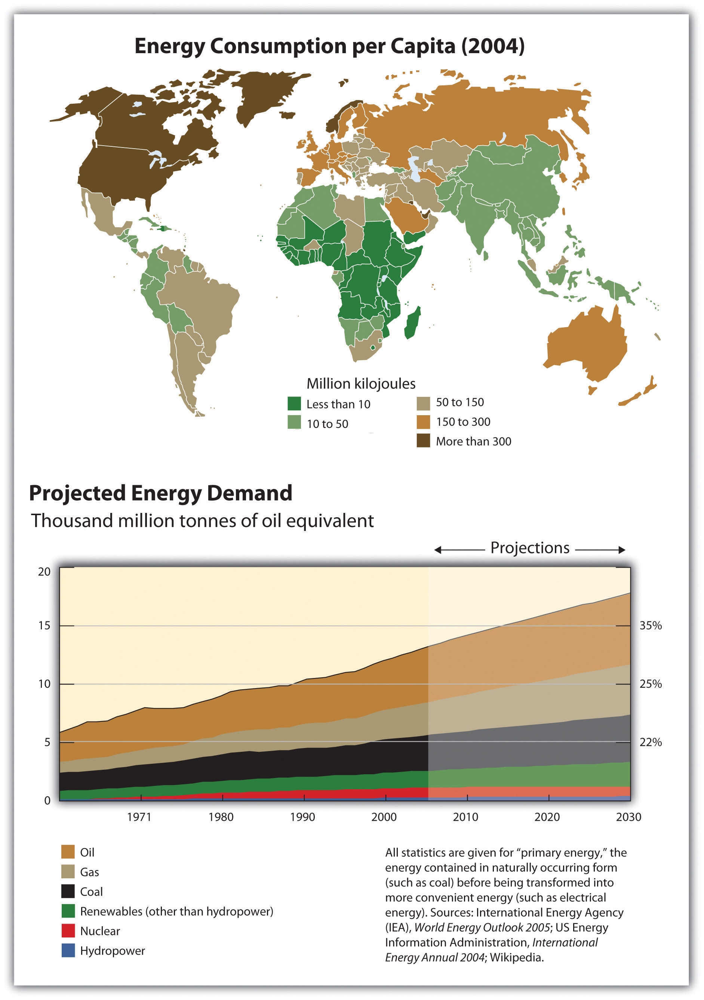

Sustainability innovators create new products and services designed to solve the problems created by the collision of economic growth, population growth, and natural systems. They seek integrated solutions that offer financial renumeration, ecological system protection, and improved human health performance, all of which contribute to community prosperity. Sustainability innovation, growing from early ripples of change in the 1980s and 1990s, now constitutes a wave of creativity led by a growing population of entrepreneurial individuals and ventures. This form of creativity applies to raw materials selection, energy use, and product design as well as company strategies across supply chains. It encompasses renewable energy technologies to reduce pollution and climate impacts as well as the safer design of molecular materials used in common household products. Today’s tough economic times and need for job creation, while seemingly detracting from environmental concerns, in fact underscore the importance of monitoring energy and material input and waste cost-reduction measures; these are made visible through a sustainability lens. In addition, because the environmental health and ecological system degradation issues will only increase with economic growth, and public concern is unlikely to fade, those firms that explore sustainability efficiencies and differentiation opportunities now will be better positioned to weather the economic downturn.
Research indicates that individuals and ventures that pursue these objectives often work through networks of diverse supply-chain collaborations to realize new and better ways of providing goods and services. As a result, a plethora of substitute products, technologies, and innovative ways of organizing that address pollution, health, resource use, and equity concerns are being introduced and tested in the marketplace. This is the challenge and the excitement of sustainability innovation. In this chapter we look more closely at sustainability innovation. What forces have driven it, and how is it being defined?
Two areas, energy and materials, provide useful entry points for exploring why businesses are increasingly using sustainability frameworks for thinking about the redesign of their products and operations. However, in the first decade of the twenty-first century, the media and public increasingly focused on climate change as the top environmental issue. Severe storms and other extreme weather patterns predicted by climate change scientists had become more evident. Hurricane Katrina in New Orleans, accelerated Arctic and Antarctic warming, rising ocean levels, and increasing carbon dioxide (CO2) concentrations were discussed widely in the scientific reports and the mainstream media as examples of how human actions shaped natural systems’ dynamics. At the biological level, accumulating industrial chemicals in adults’ and children’s bodies were reported as one of the wide-ranging examples of system equilibrium disruptions. There was growing discussion of tipping points and ways to contain change within an acceptable range of variation for continued human prosperity.
Partly in response to this growing concern, globally and within nation-states, markets for carbon; clean and more efficient energy; and safer, cleaner products have grown rapidly. These markets will continue to expand given economic growth trajectories, the rapid movement of more people into a global middle class, and the constrained capacities of natural systems, including our bodies, to absorb the impacts.
While some hear only negative news in these words, entrepreneurs and innovators typically do not spend much time on the negative messages. They use innovation to create alternatives. They envision new and better possibilities. They take action to address perceived inefficiencies and to solve problems. Health and environmental problems, the inefficiencies related to pollution, and the newly understood health threats are viewed as opportunities for entrepreneurially minded individuals and ventures to offer substitutes.
The shift in perception about industrial and commercial pollution and adverse impacts has been augmented by a new appreciation of the scale and scope of human activity. For example, a short time ago pollution was considered a manageable local problem (and even a visible indicator of economic progress). Today our scientific knowledge has advanced to see not just visible acute pollution challenges as health problems but also molecular depositions far from their source; in other words, problems stretching across local, regional, and even global scales are major unintended effects of industrialization.
Table 2.1 Changes in the Character of the Ecological and Health Challenges, Pre-1980s versus Post-1980s
| Pre-1980s | Post-1980s |
|---|---|
| Minor | Systemic |
| Localized | Global |
| Dispersed and separate | Tightly coupled |
| Simple | Complex |
| Isolated | Ubiquitous |
| Stable and visible | Turbulent and hard to discern |
| Slow-moving | Accelerated |
By 2010 there was a scientific and policy acknowledgement about the physical impossibility of maintaining ecosystems’ stability in the face of the existing and the anticipated scale and scope of pollution levels. A biosphere that seemed a short time ago to be infinite in its capacity to absorb waste and provide ecosystem services showed growing evidence of limits. Thus today, satisfying the legitimate material and energy demands of billions of upwardly mobile people in the global community, without severely disrupting ecosystem functions and exacting harsh human costs, is a first-order challenge for economic and business design. This problem is soluble, but it requires creativity that reaches beyond conventional thinking to imagine new models for economic growth and for business. In fact, in increasing numbers companies are now adopting sustainability principles in their product designs and strategies. Recognizing the problem-complexity shift represented by the second column in Table 2.1 "Changes in the Character of the Ecological and Health Challenges, Pre-1980s versus Post-1980s", companies are taking on what can be called a sustainability view of their world. The changes under way are captured in Table 2.2 "Traditional View versus Sustainability View", which compares the old business approach, defined by more narrowly framed environmental issues, and leading entrepreneurial innovators’ perspectives on sustainability challenges.
Table 2.2 Traditional View versus Sustainability View
| Traditional view | Sustainability view |
|---|---|
| Rhetoric and greenwash | Operational excellence |
| Cost burden | Efficiencies |
| Compliance | Cost competitiveness/strategic advantage |
| Doing good/altruism | Strong financial performance |
| Peripheral to the business | Core to the business |
| Technology fix | Frameworks, tools, and programs |
| Reactive | Innovative and entrepreneurial |
Let’s start at a more macro level of analysis that allows us to track the reframing of what historically have been called environmental concerns. To better understand the functioning and interdependencies of the natural and human-created systems of which we are a part, we can look at basic energy and material flows. Even a cursory look reveals some of the major challenges. Fossil fuel energy consumption is closely linked to local and global climate modification, ocean acidification (and consequently coral reef degradation that undermines ocean food supplies), and ground-level air pollution, among other problems. Materials extraction and use are tightly coupled with unprecedented waste disposal challenges and dispersed toxins. Furthermore, in our search for energy and materials to fuel economic growth and feed more people, we have been systematically eliminating the habitat and ecosystems on which our future prosperity depends.
Figure 2.1 Changing Conditions for Business
Source: Adapted from The Natural Step 2005.
In 1900 a business did not have to think about its impact on the larger natural world. However, with population growth, a rapidly expanding global economy, and greater transparency demanded from civil society, firms feel increasing pressure to adapt to a more constrained physical world. The existing business model is being challenged by entrepreneurial innovations offering different ways of thinking about business in society. Thus, by studying sustainability innovation, we are able to look at alternative business models for the future.
Americans have long voiced support for environmental issues in public opinion polls. That concern has grown, especially as human-influenced climate change became increasingly apparent and a harbinger of broader ecological and health challenges. Even as the US economy faltered dramatically in late 2008, 41 percent of respondents to a survey for the Pew Research Center stated in January 2009 that the environment should remain the president’s top priority, while 63 percent thought the same when President Bush was in office in 2001.Pew Research Center for the People and the Press, “Economy, Jobs Trump All Other Policy Priorities in 2009,” news release, January 22, 2009, accessed March 27, 2009, http://people-press.org/report/485/economy-top-policy-priority. In a different series of polls conducted by Pew between June 2006 and April 2008, over 70 percent of Americans consistently said there is “solid evidence” that global warming is occurring, and between 41 and 50 percent said human activity is the main cause. Independents and Democrats were one and one-half times to twice as likely as Republicans to agree to the statements, indicating ongoing political divisions over the credibility or impartiality of science and how it should inform our response to climate change.Pew Research Center for the People and the Press, “A Deeper Partisan Divide over Global Warming,” news release, May 8, 2008, accessed March 27, 2009, http://people-press.org/reports/pdf/417.pdf. Regardless of climate change public opinion polls, however, by 2010 energy issues had gained national attention for an ever-broadening set of reasons.
In fact, by 2010 climate change often was linked to energy independence and energy efficiency as the preferred strategy to get both liberals and conservatives to address global warming. This approach emphasized saving money by saving energy and deploying innovative technology rather than relying on federal mandates and changes to social behavior to curb emissions. The federal government was asked to do more under President Obama. Energy independence included reduced reliance on imported oil as well as nurturing renewable energy and technologies and local solutions to electricity, heating and cooling, and transportation needs. The Energy Security and Independence Act of 2007, among other things, increased fuel economy standards for cars, funded green job training programs, phased out incandescent light bulbs, and committed new and renovated federal buildings to being carbon-neutral by 2030.
Meanwhile, renewable energy sources continue to inch upward. By 2007, just over 71 quadrillion British thermal units of energy were produced in total in the United States. About 9.5 percent of that energy came from renewable sources: hydroelectric (dams), geothermal, solar, wind, and wood or other biomass. Indeed, wood and biomass accounted for about 52 percent of all renewable energy production, while hydroelectric power represented another 36 percent. Wind power represented about 5 percent of renewable energy and solar 1 percent.Energy Information Administration, Department of Energy, “Table 1.2: Primary Energy Production by Source, 1949–2009,” Annual Energy Review, accessed March 27, 2009, http://www.eia.doe.gov/emeu/aer/txt/ptb0102.html. The numbers were relatively small, but each of these markets was experiencing double-digit growth rates, offering significant opportunities to investors, entrepreneurs, and firms that wanted to contribute to cleaner energy and reduced fossil fuel dependence.
In fact, climate change took center stage among environmental issues in the first decade of this century, with public awareness of climate change heightened by unusual weather patterns. Hurricane Katrina, which devastated New Orleans in 2005, was interpreted as a sign of worse storms to come. The Intergovernmental Panel on Climate Change (IPCC) released its Fourth Assessment Report in 2007. This report affirmed global climate change was largely anthropogenicCreated by the activity of human beings. The twenty-first century is being described as the time when people acknowledge the anthropogenic Earth; that is, Earth systems (carbon, nitrogen, and climate systems, for example) and ecological systems (wetlands, forests, freshwater lakes, and coastal zones) are shaped and defined by human influence. (caused by human activity) and indicated that change was occurring more rapidly than anticipated. Almost a doubling of the rate of sea level rise was recorded from 1993 to 2003 compared to earlier rates, and a steady increase in the ocean’s acidity was verified.Rajendra K. Pachauri, and Andy Reisinger, eds. (core writing team), Climate Change 2007: Synthesis Report (Geneva, Switzerland: Intergovernmental Panel on Climate Change, 2008), accessed November 30, 2010, http://www.ipcc.ch/publications_and_data/publications_ipcc_fourth_assessment_report _synthesis_report.htm. The ocean’s pH decreased about 0.04 pH units from 1984 to 2005. Acidity is measured on a logarithmic scale from 0 to 14, with a one pH unit increase meaning a tenfold increase in acidity. The 2006 Stern Review on the Economics of Climate Change, commissioned by the Treasury of the United Kingdom, attempted to put a cost on the price of business as usual in the face of climate change. It estimated climate change could incur expenses equivalent to 5 to 20 percent of the global gross domestic product (GDP) in the coming decades if nothing changed in our practices, whereas acting now to mitigate the impact of climate change would cost only about 1 percent of global GDP. As the report concluded, “Climate change is the greatest market failure the world has ever seen.”Sir Nicholas Stern, Stern Review on the Economics of Climate Change (London: HM Treasury, 2006), viii, accessed March 26, 2009, http://www.hm-treasury.gov.uk/sternreview_index.htm.
Also in 2007, former vice president Al Gore’s documentary on climate change, An Inconvenient Truth, won an Oscar for best feature documentary, while Gore and the IPCC were jointly awarded the Nobel Peace Prize. Although debates over the science continued, the consensus of thousands of scientists worldwide that the atmospheric concentrations of CO2 were at least in part man-made firmly placed global climate and fossil fuel use on the agenda. National policies and the US military engagements related to securing and stabilizing oil imports and prices focused attention further on avoiding oil dependency. Indicating resource issues’ close link to social conflicts, in 2008 the National Intelligence Estimate report from the CIA and other agencies warned climate change could trigger massive upheaval, whether from natural disasters and droughts that destabilized governments or increased flows of climate refugees, both the result of and cause of competition over resources and civil unrest.
The 2006 film An Inconvenient Truth chronicles the perils of climate change and former US Vice President Al Gore’s work to alert people to the danger.
The 2008 Olympic Games in Beijing, meanwhile, highlighted the increasing pollution from high-growth industrializing countries. That year China eclipsed the United States as the leading emitter of CO2, while Chinese officials had to take steps to prevent athletes and tourists from choking in Beijing’s notorious smog. To reduce the worst vehicle emissions in the days leading up to the games, cars with even license plate numbers could drive one day, odd the next, and factories were shut down.Paul Kelso, “Olympics: Pollution over Beijing? Don’t Worry, It’s Only Mist, Say Officials,” Guardian (London), August 6, 2008, accessed November 30, 2010, http://www.guardian.co.uk/sport/2008/aug/06/olympics2008.china; Talea Miller, “Beijing Pollution Poses Challenge to Olympic Athletes,” PBS NewsHour, May 16, 2008, accessed November 30, 2010, http://www.pbs.org/newshour/indepth_coverage/asia/china/2008/athletes.html. India also has struggled to curb pollution as its industrialization accelerates. The World Bank estimated India’s natural resources will be more strained than any other country’s by 2020.“India and Pollution: Up to Their Necks in It,” Economist, July 17, 2008, accessed November 30, 2010, http://www.economist.com/world/asia/displaystory.cfm?story_ id=11751397.
To those living in a developed country, particularly in the United States where climate change continues to be debated, warming temperatures can seem somewhat abstract. The following links provide narratives and visual appreciation for how climate change actually influences many people around the world.
http://www.guardian.co.uk/environment/video/2009/nov/30/bangladesh-climate-migration
http://www.guardian.co.uk/environment/video/2009/dec/07/copenhagen-nepal-bangladesh
http://www.guardian.co.uk/environment/video/2008/jul/25/glacier.tian
Broad scientific consensus on climate change and its origin, the increased concentration of greenhouse gases (GHGs) in the atmosphere, has motivated hundreds of US cities, from Chicago to Charlottesville, to pledge to follow the Kyoto Protocol to reduce emissions within their municipalities through a variety of mechanisms including setting green building standards. The Kyoto Protocol is an international agreement among countries formally initiated in 1997 whose goal is to reduce (GHGs).
Figure 2.2 Bangladeshis Sandbagging Coastline
Source: “Environmental Geology of Developing Nations: Geology 351,” Department of Geological Sciences, California State University, Los Angles, accessed March 14, 2011, http://www.calstatela.edu/dept/geology/G351.htm.
This city movement is under way despite the eight-year oppositional position of President Bush’s administration and the Obama administration’s unsuccessful effort to promote a national carbon policy. States also took the lead on many other environmental issues, and according to the Pew Center on Global Climate Change, as of January 2009, twenty-nine states had mandatory renewable energy portfolio standards to encourage the growth of wind, solar, and other energy sources besides fossil fuels. This meant states set target dates at which some percentage (5 to 25 percent, for example) of the energy used within the state must come from renewable energy technology. Another six states had voluntary goals.Pew Center on Global Climate Change, “Renewable & Alternative Energy Portfolio Standards,” October 27, 2010, accessed November 30, 2010, http://www.pewclimate.org/what_s_being_done/in_the_states/rps.cfm. California’s 2006 Global Warming Solutions Act committed the state to reduce GHG emissions from stationary sources. In fall 2010, California voters affirmed the state’s comprehensive climate law designed to promote renewable energy, green-collar jobs, and lower emission vehicles, along with other advanced sustainability-focused technologies. Transportation is also a heavy contributor to CO2 emissions. Regulation of GHG emissions from vehicles may join a series of other regulations on mobile pollution sources. Since trading programs have succeeded in reducing nitrogen oxides and sulfur dioxide from stationary sources, vehicles have increased their relative contribution to acid rain and ground-level ozone, or smog. Each vehicle today may pollute less than its counterpart in 1970, but Americans have more cars and drive them farther, thus increasing total pollution from this sector. The US Environmental Protection Agency (EPA) acknowledges, “Transportation is also the fastest-growing source of GHGs in the U.S., accounting for 47 percent of the net increase in total U.S. emissions since 1990.”US Environmental Protection Agency, Office of Transportation and Air Quality, “Transportation and Climate: Basic Information,” last modified September 14, 2010, accessed November 30, 2010, http://www.epa.gov/OMS/climate/basicinfo.htm. Other countries have seen similar increases in vehicles and their associated pollution.
Figure 2.3 Smog over Beijing, 2006
Source: NASA’s Earth Observatory, “Thick Smog of Beijing, China,” November 8, 2005, accessed March 14, 2011, http://earthobservatory .nasa.gov/IOTD/view.php?id=6000.
Although few countries regulated GHGs from vehicles as of 2009, many have focused on reducing other pollutants. The United States, the European Union, India, China, and other countries realized that particulate matter emissions from diesel fuel in particular could not be controlled at the tailpipe or locomotive exhaust vent without changing the whole supply chain, and without that change, about 85 percent of the largest cities in developing countries would continue to suffer poor air quality.United Nations Environment Programme, Partnership for Clean Fuels and Vehicles, “Background,” accessed November 30, 2010, http://www.unep.org/pcfv/about/bkground.asp. Thus US refineries have been mandated to produce diesel fuel at or below fifteen parts sulfur per million. This is being phased in for vehicles, trains, ships, and heavy equipment from 2006 to 2014. The lower sulfur content both reduces the sulfur dioxide formed during combustion and allows the use of catalytic converters and other control technology that would otherwise be rapidly corroded by the sulfur.
For CO2 from these mobile sources, in 2009 President Obama asked the EPA to reconsider California’s request to regulate GHG emissions from vehicles, a request initially denied under the Bush administration despite a 2007 Supreme Court ruling that required the EPA to regulate GHGs under the Clean Air Act. Assuming California adopts stricter vehicle emissions standards, almost twenty other states will adopt those standards. Moreover, the American Recovery and Reinvestment Act of 2009 appropriated billions of dollars for green infrastructure, including high-speed rail.
http://www.americanprogress.org/issues/2009/01/emissions_timeline.html
The Kyoto Protocol itself, nonetheless, faced an uncertain fate under the Obama administration. Discussions for the successor to Kyoto were held in December 2009 in Copenhagen. In the interim between those two frameworks, over 180 nations plus nongovernmental organizations (NGOs)—many criticized for the carbon footprint of traveling in private jets—attended the UN Bali Climate Change Conference in December 2007.
Figure 2.4 European Union Emissions Trading System (ETS) Carbon Prices, 2005–7
Source: Committee on Climate Change, Fourth Carbon Budget (2010), 93, accessed March 21, 2011, http://downloads.theccc.org.uk.s3.amazonaws.com/4th%20Budget/CCC-4th-Budget-Book_with-hypers.pdf
As climate change and its consequences have become increasingly accepted as real, more people and institutions are considering their “carbon footprints,” the levels of CO2 associated with a given activity. A number of voluntary programs, such as the Climate Registry, ISO 14000 for Environmental Management, and the Global Reporting Initiative, emerged to allow organizations and businesses to record and publicize their footprint and other environmental performance tracking. To assess and abet such efforts, in 2000 the US Green Building Council introduced a rating system called Leadership in Energy and Environmental Design (LEED)A nongovernmental green building design and construction certification system that encourages the design and construction of improved performance in buildings through attention to water use, energy savings, GHS emissions, indoor air quality, and material resource conservation. LEED standards offer measurable ways to improve design, construction, operating efficiencies, and maintenance.. Buildings earn points for energy efficiency, preserving green space, and so on; points then convert to a certification from basic to platinum. The 7 World Trade Center building, for instance, was gold certified upon its reconstruction in 2006.Taryn Holowka, “7 World Trade Center Earns LEED Gold,” US Green Building Council, March 27, 2006, accessed March 27, 2009, http://www.usgbc.org/News/USGBCNewsDetails.aspx?ID=2225. Other green building programs have appeared, while groups such as TerraPass and CarbonFund began selling carbon offsets for people to reduce the impact of their local pollution. Investors also have jumped in. Sustainable-investment funds allow people to buy stocks in companies screened for environmental practices and to press shareholder resolutions. For example, institutional investors representing state retirement funds have asked for evidence that management is fulfilling its fiduciary responsibility to protect the stock price against climate change impacts and other unexpected ecological and related political surprises. The Social Investment Forum’s 2007 Report on Socially Responsible Investing Trends in the United States noted that about 11 percent of investments under professional management in the United States—$2.7 trillion—adhered to one or more strategies of “socially responsible investment,” a category encompassing governance, ecological, health, and safety concerns.Social Investment Forum, 2007 Report on Socially Responsible Investing Trends in the United States (Washington, DC: Social Investment Forum Foundation, 2007), accessed March 27, 2009, http://www.socialinvest.org/resources/research.
Figure 2.5 Global Per Capita Energy Consumption, 2004
Source: UNEP/GRID-Arendal, “Energy Consumption per Capita (2004),” UNEP/GRID-Arendal Maps and Graphics Library, accessed March 14, 2011, http://maps.grida.no/go/graphic/energy_consumption_per_capita_2004.
In conjunction with threats to the globe’s ecosystems (a somewhat removed and therefore abstract notion for many), people became increasingly aware of threats to their personal health. This concern shifts attention from climate and energy issues at a more macro level to the material aspects of pollution and resource management.
Knowledge about health threats from chemical exposure goes back in history. Lead and mercury were known human toxins for centuries, with the “mad hatter” syndrome caused by hat makers’ exposure to mercury, a neurotoxin. The scale and scope of chemicals’ impacts, combined with dramatically improved scientific analysis and monitoring, distinguish today’s challenges from those of the past. Bioaccumulation and persistence of chemicals, the interactive effect among chemicals once in the bloodstream, and the associated disruptions of normal development have continued to cause concern through 2010. Chemical off-gassing from materials used to build Federal Emergency Management Agency (FEMA) temporary housing trailers causing health problems for Katrina Hurricane victims, the ongoing health problems of early responders to the 9/11 terrorist attack in New York City, and health issues associated with bisphenol A (BPA) in hard plastic containers and food and beverage cans are some of the well-known issues of public concern raised in the last few years.The US Department of Health and Human Services offers suggestions to parents to avoid exposure to children. See US Department of Health and Human Services, “Bisphenol A (BPA) Information for Parents,” accessed November 30, 2010, http://www.hhs.gov/safety/bpa.
The national Centers for Disease Control and Prevention began periodic national health and exposure reports soon after the publication of Our Stolen Future, authored by Theo Colborn, Dianne Dumanoski, and John Peterson Myers.See the home page for the book: “Our Stolen Future,” accessed March 7, 2011, http://www.ourstolenfuture.org Considered by many as the 1990s sequel to Rachel Carson’s groundbreaking 1962 book Silent Spring, which informed and mobilized the public about pesticide impacts, Our Stolen Future linked toxins from industrial activity to widespread and growing human health problems including compromises in immune and reproductive system functions. In 2005, the federal government’s Third National Report on Human Exposure to Environmental Chemicals found American adults’ bodies contained noticeable levels of over one hundred toxins (our so-called body burdenAlso referred to as the chemical load, this includes the heavy metals, synthetic chemicals, and other toxins identified in samples of human blood and urine, accumulated over time from before birth; body burden reports are published by the US Centers for Disease Control and Prevention.), including the neurotoxin mercury taken up in our bodies through eating fish and absorbing air particulates (from fossil fuel combustion) and phthalates (synthetic materials used in production of personal care products, pharmaceuticals, plastics, and coatings such as varnishes and lacquers). Phthalates are associated with cancer outcomes and fetal development modifications.
BPA, an endocrine-disrupting chemical that can influence human development even at very low levels of exposure, has been associated with abnormal genital development in males, neurobehavioral problems such as attention deficit/hyperactivity disorder (ADHD), type 2 diabetes, and hormonally mediated cancers such as prostate and breast cancers.Frederick S. vom Saal, Benson T. Akingbemi, Scott M. Belcher, Linda S. Birnbaum, D. Andrew Crain, Marcus Eriksen, Francesca Farabollini, et al., “Chapel Hill Bisphenol A Expert Panel Consensus Statement: Integration of Mechanisms, Effects in Animals and Potential to Impact Human Health at Current Levels of Exposure,” Reproductive Toxicology 24, no. 2 (August/September 2007): 131–38, accessed November 30, 2010, http://www.ewg.org/files/BPAConsensus.pdf.
A recent update found three-fourths of Americans had triclosan in their urine, with wealthier Americans having higher levels.The report and updates are available from Centers for Disease Control and Prevention (CDC). See Centers for Disease Control and Prevention, “National Report on Human Exposure to Environmental Chemicals,” last modified October 12, 2010, accessed November 30, 2010, http://www.cdc.gov/exposurereport. This antibiotic is added to soaps, deodorants, toothpastes, and other products. In the first decade of the twenty-first century, pharmaceutical companies were coming under greater scrutiny as antibiotics and birth control hormones were found in city water supplies; the companies had to begin to assess their role in what has come to be called the PIE (pharmaceuticals in the environment) problem. Children, because of their higher consumption of food and water per body weight and their still-vulnerable and developing neurological, immune, and reproductive systems, are especially at risk.
Virtually all of America’s fresh water is tainted with low concentrations of chemical contaminants, according to the new report of an ambitious nationwide study of streams and groundwater conducted by the U.S. Geological Survey.C. Lock, “Portrait of Pollution: Nation’s Freshwater Gets Checkup,” Science News, May 22, 2004, accessed March 7, 2011, http://findarticles.com/p/articles/mi_m1200/is_21_165/ai_n6110353.
Europe has led the world in its public policy response to reduce the health risks of chemicals. After many years of debate and discussion with labor, business, and government, the EU adopted the “precautionary principleA principle that asserts chemicals should be tested for toxicity and approved before use, rather than being deployed and then checked for toxicity afterward.” in 2007, requiring manufacturers to show chemicals were safe before they could be introduced on a wide scale.European Commission, “What Is REACH?,” last modified May 20, 2010, accessed November 30, 2010, http://ec.europa.eu/environment/chemicals/reach/reach_intro.htm. The REACH directive—Registration, Evaluation, Authorization, and Restriction of Chemicals—will be phased into full force by 2018. REACH requires manufacturers and importers to collect and submit information on chemicals’ hazards and practices for safe handling. It also requires the most dangerous chemicals to be replaced as safer alternatives are found.
The opposite system, which gathers toxicological information after chemicals have spread, prevails in the United States. Hence only after a spate of contaminated products imported from China sickened children and pets did Congress pass the US Consumer Product Safety Act amendments in 2008 to ban lead and six phthalates from children’s toys. However, another phthalate additive, BPA, was not banned. Often found in #7 plastics, including popular water bottles seen on college campuses around the country, BPA was linked to neurological and prostate problems by the National Toxicology Program.National Institute of Environmental Health Sciences, National Toxicology Program, Bisphenol A (BPA) (Research Triangle Park, NC: National Institutes of Health, US Department of Health and Human Services, 2010), accessed November 30, 2010, http://www.niehs.nih.gov/health/docs/bpa-factsheet.pdf. Although the US Food and Drug Administration (FDA), unlike its EU and Canadian counterparts, chose not to ban the chemical, many companies stopped selling products with BPA.
Environmental Health News provides environmental health information, global and updated daily.
Indeed, consumers have been increasingly wary of materials that inadvertently enter their bodies through the products they use, the air they breathe, and what they put into their bodies by diet. Sales of organic and local foods have been rising rapidly in numbers and prominence since the 1990s due to a greater focus on health. According to the Organic Trade Association, organic food sales climbed from $1 billion in 1990 to $20 billion in 2007.Organic Trade Association, “Industry Statistics and Projected Growth,” June 2010, accessed November 30, 2010, http://www.ota.com/organic/mt/business.html. Once found only in natural food stores, organic foods have been sold predominantly in conventional supermarkets since 2000.Carolyn Dimitri and Catherine Greene, Recent Growth Patterns in the U.S. Organic Foods Market, Agriculture Information Bulletin No. AIB-777 (Washington, DC: US Department of Agriculture, Economic Research Service, 2002), accessed December 1, 2010, http://www.ers.usda.gov/publications/aib777/aib777.pdf. Meanwhile, community-supported agriculture by 2007 encompassed nearly 13,000 farms as people grew more interested in sourcing from their local food shed.US Department of Agriculture, “Community Supported Agriculture,” last modified April 28, 2010, accessed November 30, 2010, http://www.nal.usda.gov/afsic/pubs/csa/csa.shtml. In addition to protection against food supply disruption due to fuel price volatility, terrorist attack, or severe weather (most foods are transported over 1,000 miles to their ultimate point of consumption, creating what many view as undesirable distribution system vulnerabilities), local food production ensures traceability (important for health protection), higher nutritional content, fewer or no chemical preservatives to extend shelf life, and better taste while providing local economic development and job creation.
Whether from energy production or materials processing, a major challenge across the board is where to put the waste. As visible and molecular waste accumulates, there are fewer places to dispose of it. Global carbon sinks, the natural systems (oceans and forests) that can absorb GHGs, show signs of stress. Oceans may have reached their peak absorption as they acidify and municipal waste washes onshore. Forests continue to shrink, unable to absorb additional CO2 emissions still being pumped into the atmosphere. The United Nations’ Food and Agriculture Organization reported that from 1900 to 2005, Africa lost about 3.1 percent of its forests; South America lost around 2.5 percent; and Central America, which had the highest regional rate of deforestation, lost nearly 6.2 percent of its forests. Individual countries have been hit particularly hard: Honduras lost 37 percent of its forests in those 15 years, and Togo lost a full 44 percent. However, the largest absolute loss of forests continues in Brazil, home of the Amazon rain forest. Brazil’s forests have been shrinking annually since 1990 by about three million hectares—an area about the size of Connecticut and Massachusetts combined.Food and Agriculture Organization of the United Nations, “Global Forest Resources Assessment 2005,” last modified November 10, 2005, accessed March 26, 2009, http://www.fao.org/forestry/32033/en.
Solid waste, particularly plastics, has also come under increasing scrutiny because of its proliferation in and outside of landfills. Estimates put the number of plastic bags used annually in the early 2000s between five hundred billion and five trillion.John Roach, “Are Plastic Grocery Bags Sacking the Environment?,” National Geographic News, September 2, 2003, accessed November 30, 2010, http://news.nationalgeographic.com/news/2003/09/0902_030902 _plasticbags.html; “The List: Products in Peril,” Foreign Policy, April 2, 2007, accessed March 25, 2008, http://www.foreignpolicy.com/story/cms.php?story_id=3762. These bags, made from oil, are linked to clogged waterways and choked wildlife. Mumbai, India, forbade stores from giving out free plastic bags in 2000. Bangladesh, Ireland, South Africa, Rwanda, and China followed suit with outright bans or fees for the bags.“The List: Products in Peril,” Foreign Policy, April 2, 2007, accessed March 25, 2008, http://www.foreignpolicy.com/story/cms.php?story_id=3762; “China Bans Free Plastic Shopping Bags,” International Herald Tribune, January 9, 2008, accessed November 30, 2010, http://www.iht.com/articles/2008/01/09/asia/plastic.php. San Francisco became the first US city to ban plastic bags at large supermarkets and pharmacies in 2007.Charlie Goodyear, “S.F. First City to Ban Plastic Shopping Bags,” San Francisco Chronicle, March 28, 2007, accessed March 25, 2009, http://www.sfgate.com/cgi-bin/article.cgi?file=/c/a/2007/03/28/MNGDROT5QN1.DTL. Los Angeles passed a similar ban in 2008 that takes effect in 2010 unless California adopts rules to charge patrons twenty-five cents per bag. Los Angeles had estimated that its citizens alone consumed about 2.3 billion plastic bags annually and recycled less than 5 percent of them.David Zahniser, “City Council Will Ban Plastic Bags If the State Doesn’t Act,” Los Angeles Times, July 23, 2008, accessed March 25, 2009, http://articles.latimes.com/2008/jul/23/local/me-plastic23.
Bottled water may now face a similar fate because of the tremendous increase in trash from plastic bottles and the resources consumed to create, fill, and ship those bottles.Charles Fishman, “Message in a Bottle,” Fast Company, July 1, 2007, accessed March 26, 2009, http://www.fastcompany.com/magazine/117/features-message- in-a-bottle.html. New York City, following San Francisco; Seattle; Fayetteville, Arkansas; and other cities, has curbed buying bottled water with city money.Jennifer Lee, “City Council Shuns Bottles in Favor of Water from Tap,” New York Times, June 17, 2008, accessed March 26, 2009, http://www.nytimes.com/2008/06/17/nyregion/17water.html. The inability of natural systems to absorb the flow of synthetic waste was dramatically communicated with reports and pictures of the Great Pacific Garbage Patch, also known as the North Pacific Gyre. Pacific Ocean currents create huge eddies where plastic waste is deposited and remains in floating islands of garbage.
Although manufacturers of other products from CDs to laundry detergent have already decreased the amount of packaging they use, and although many American municipalities have increased their recycling capacity, the results are far less than what is required to achieve sustainability, and they still lag behind Europe’s progress. The European Parliament and Council Directive 94/62/EC of December 1994 set targets for recycling and incinerating packaging to create energy. By 2002, recycling rates in the EU exceeded 55 percent for glass, paper, and metals, although only about 24 percent of plastic was being recycled.Europa, “Packaging and Packaging Waste,” accessed March 27, 2009, http://europa.eu/scadplus/leg/en/lvb/l21207.htm#AMENDINGACT. An EU directive from 2003 addressed electronic waste specifically, requiring manufacturers of electronic equipment to set up a system to recycle their products. Target recycling rates were initially set at 70 percent by weight for small, household electronics and 80 percent for large appliances, with separate rates for recycling or reusing individual components.Europa, “Waste Electrical and Electronic Equipment,” last modified January 6, 2010, accessed November 30, 2010, http://europa.eu/scadplus/leg/en/lvb/l21210.htm. The United States as of March 2009 had no federal mandate for reclaiming electronic waste (e-waste)Waste streams composed of used and obsolete electronic devices such as computers, printers, and cell phones., although some states had implemented their own rules.US Environmental Protection Agency, “eCycling: Regulations/Standards,” last modified February 23, 2010, accessed November 30, 2010, http://www.epa.gov/epawaste/conserve/materials/ecycling/rules.htm. Companies such as Dell, criticized for their lack of attention to e-waste, responded to NGO and public concern with creative solutions. Working with citizen groups, Dell was able to shift from viewing e-waste as someone else’s problem to developing a profit-making internal venture that reused many electronic devices, put disassembled component materials back into secondary markets, and reduced the dumping of e-waste into poor countries.